Entrada de Sub-Produto
Em uma ordem de produção com status igual a “Liberada” será possível efetuar a entrada de produto acabado clicando com o botão direito na tela e selecionando a opção “Entrada de produto acabado”.
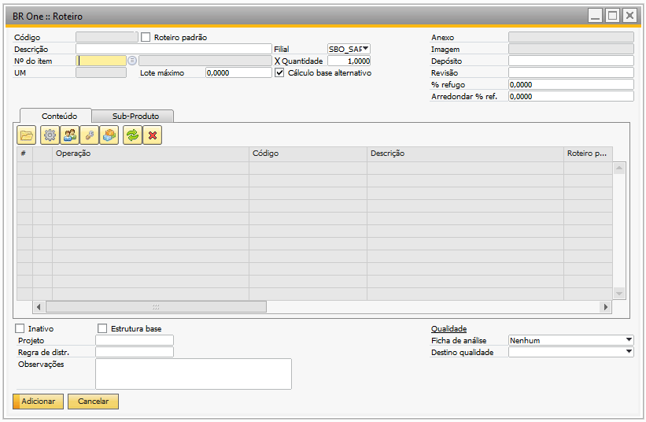{kind=link}
Se não for marcada a flag “Refugo”, ao clicar em “Adicionar”, será aberto a tela de “Entrada de sub-produto”.
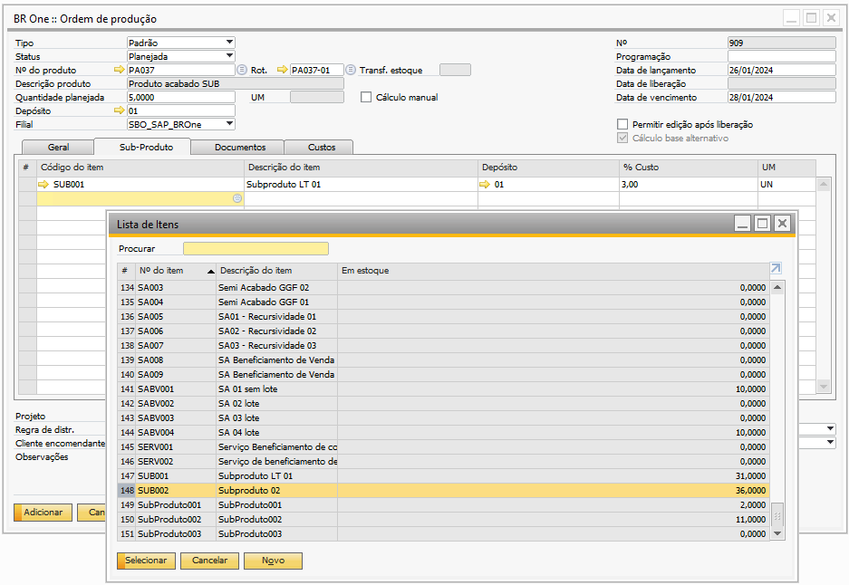{kind=link}
Nessa tela poderá ser definido a quantidade de cada sub-produto que entrará ao efetuar a entrada do produto acabado. Por padrão, as linhas virão com a quantidade zero (0,00), e o usuário poderá informar a quantidade desejada.
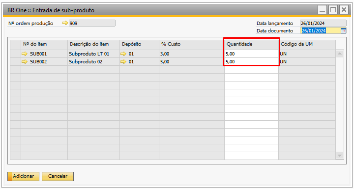{kind=link}
Caso a quantidade informada seja um valor negativo, o sistema validará e retornará a seguinte mensagem em vermelho no rodapé:
{kind=link}
BR One :: Na coluna ‘Quantidade’, entre um número inteiro maior que zero.
Ao clicar em “Adicionar”, será exibido a seguinte mensagem:
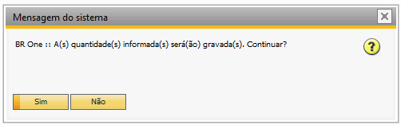{kind=link}
BR One :: A(s) quantidade(s) informada(s) será(ão) gravada(s). Deseja continuar?
Ao clicar em “Sim” o sistema voltará para a tela de entrada de produto acabado. Na tela de “Entrada de PA”, o sistema fará a entrada do item pai da ordem em um documento de entrada de mercadoria.
Se na tela de “Entrada de sub-produto” foi informado uma quantidade maior que zero, o sistema fará a entrada dos sub-produtos, caso contrário, (se a quantidade estiver com zero ou vazio) não haverá entrada de sub-produto.
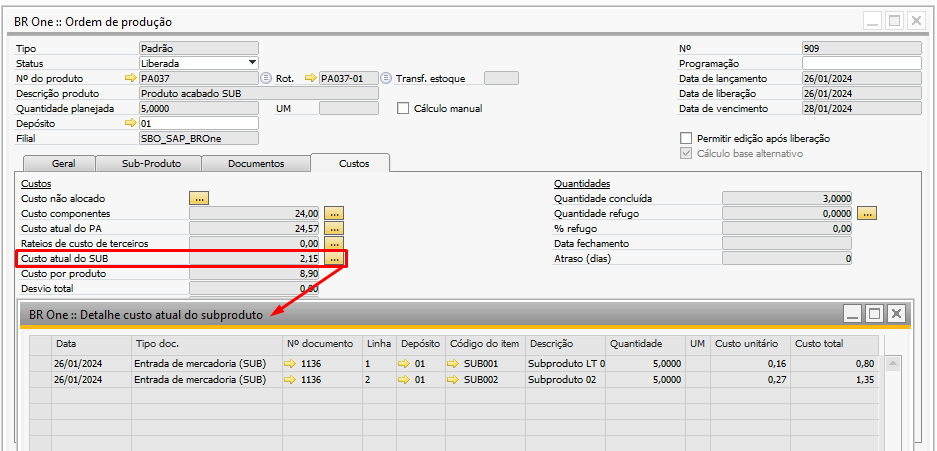 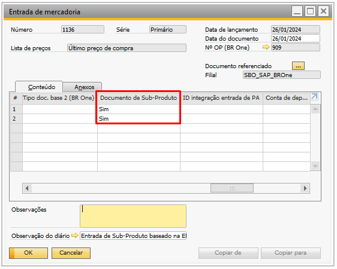{kind=link}
{kind=link}
Caso a flag “Refugo” seja marcada, somente os itens de baixa por explosão serão dados baixa no estoque.
Geração de lote automático para sub-produto
Se os itens de sub-produto forem administrados por lote, a numeração do lote será gerada automaticamente conforme a configurações da tela de “Configurações de produção” na aba “Lote/Série” na seção “Lote de Sub-produto”.
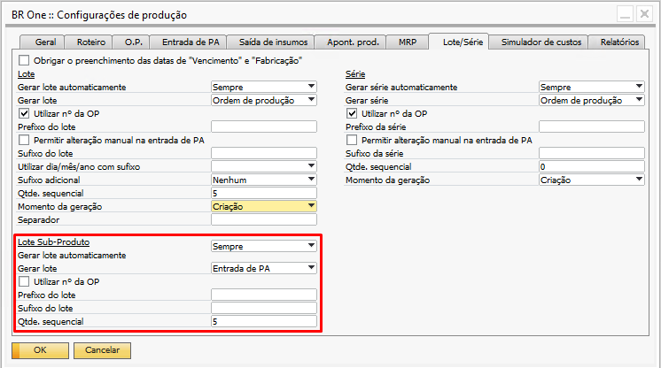{kind=link}
Gerar lote automaticamente
O campo “Gerar lote automaticamente” define se o lote nunca será gerado, se a configuração do item deve ser validada ou se sempre será gerado, para determinar o que ocorrerá, há 2 opções selecionáveis:
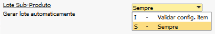{kind=link}
Validar config. item:
Quando essa opção estiver marcada, será validado o campo “Gerar lote automático” do cadastro do sub-produto da ordem de produção.
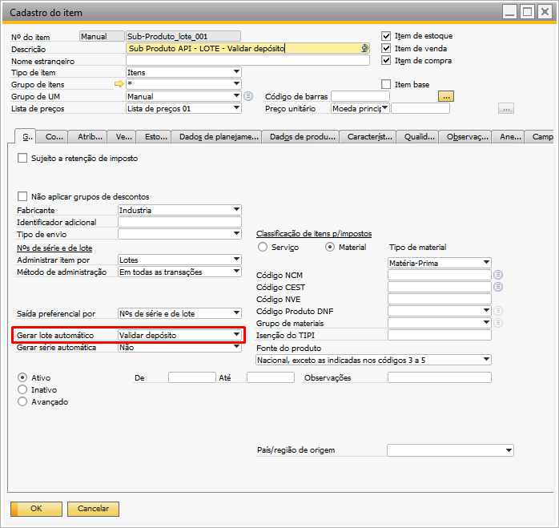{kind=link}
Há 3 tipos de opções para o campo:
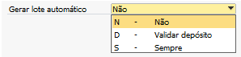{kind=link}
Não: Se esta opção estiver selecionada, não será gerado a lote automática.
Sempre: Com essa opção, sempre será gerado o número de lote automaticamente.
Validar depósito: Com essa opção marcada, o depósito da OP será validado, verificando se ele possui a flag “BR One Produção - Gerar lote automaticamente” marcada, caso esteja, a lote será gerada automaticamente.
Se não, a lote deverá ser gerada manualmente.
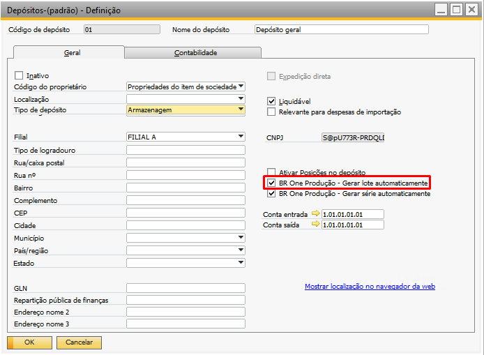{kind=link}
Sempre: Com essa opção marcada para o sub-produto, sempre será gerado o número de lote automaticamente.
Gerar lote
Neste parâmetro é possível determinar o momento da geração automática do número de lote, que pode ser pela “Ordem de produção” ou na “Entrada de PA”.
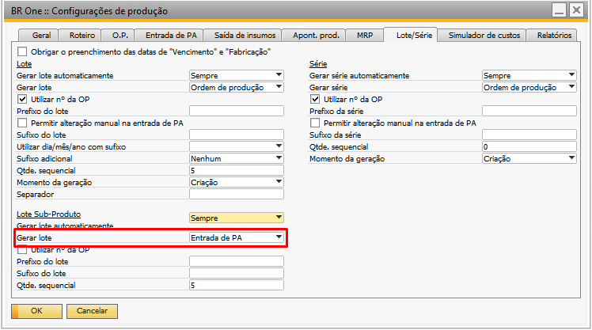{kind=link}
Existem duas opções de configuração para o parâmetro “Gerar lote” do sub-produto:
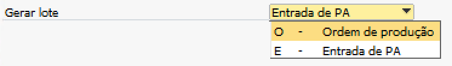{kind=link}
Ordem de Produção
Todos os lotes gerados para entrada de PAs dos sub-produtos terão a mesma numeração de acordo com as configurações.
Entrada de PA
Cada entrada realizada no processo irá gerar uma nova numeração de lote do sub-produto de acordo com as configurações.
Utilizar nº da OP
No sub-produto também é possível utilizar o número da ordem de produção na geração automática do número de lote, para isto, o parâmetro “Utilizar nº da OP”, deve estar marcado.
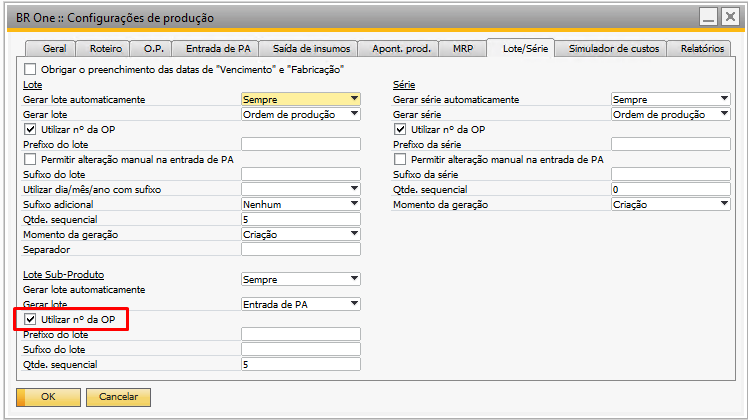{kind=link}
Prefixo do lote
Esse campo é opcional, podendo ou não ser preenchido. Nele pode ser colocado o prefixo do lote do sub-produto que será gerado.
Quando o campo “Gerar lote” estiver como “Ordem de produção”, o lote será criado com o prefixo + nº da OP.
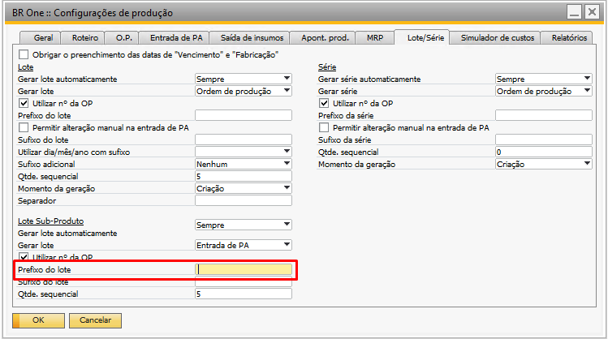{kind=link}
Sufixo de lote
Esse parâmetro é opcional, quando marcado, ele permite configurar um sufixo para o número de lote do sub-produto gerado automaticamente.
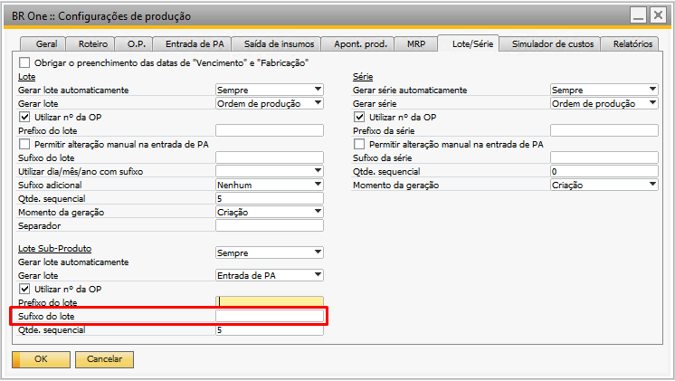{kind=link}
Qtde. Sequencial
Esse parâmetro define a quantidade de caracteres que serão utilizados para montar o sequencial do lote.
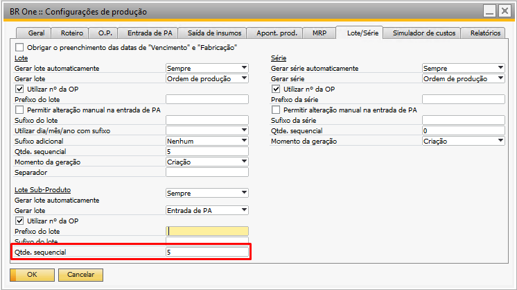{kind=link}
A quantidade de caracteres não pode ser menor que 1 e nem maior que 5. Caso o valor informado não atenda esses requisitos, a seguinte mensagem será exibida:
{kind=link}
BR One :: A quantidade no campo “Qtde. sequencial” da aba “Lote/Série” do Sub-Produto deve ser maior que 0.
{kind=link}
BR One :: O valor do campo “Qtde. sequencial” da aba “Lote/Série” do Sub-Produto deve ser menor ou igual a 5.
Também foi criada uma validação para a quantidade de caracteres, apenas se a criação for pelo processo de Ordem de Produção.
A quantidade mínima de caracteres que podem ser informados é 4, então, qualquer valor entre 1 e 3 não poderá ser utilizado como quantidade de caracteres válida, conforme mensagem:
{kind=link}
BR One :: Se a geração de lote for por Ordem de Produção na aba “Lote/Série” do Sub-Produto e o campo “Qtde. sequencial” possuir valor, o mesmo não pode ser menor que 4 e maior que 5.